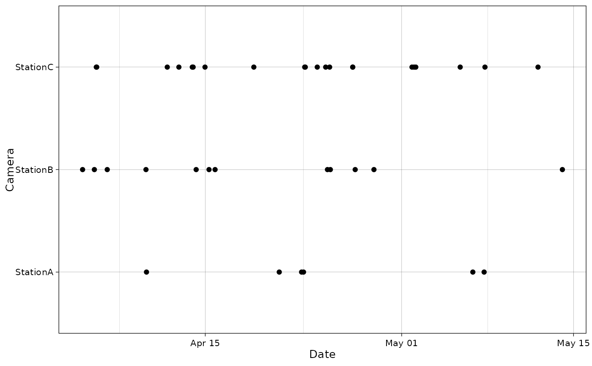
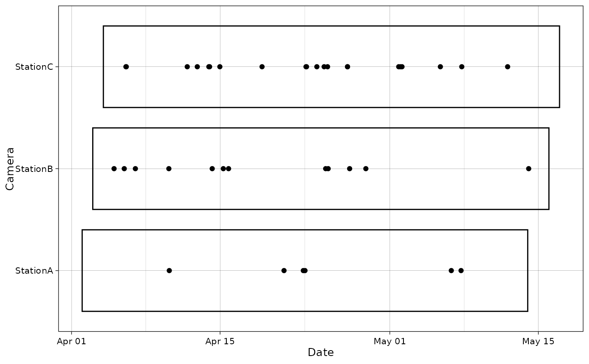

Plot species occurrences at cameras as points in time.
Usage
plot_points(
df,
camera_col,
timestamp_col = NULL,
tz = NULL,
date_col = NULL,
time_col = NULL,
cameras_list = NULL,
points_col = NULL,
caminfo = NULL,
caminfo_camera_col = camera_col,
caminfo_setup = "setup",
caminfo_retrieval = "retrieval",
interactive = FALSE,
textsize = 10,
text_x_angle = 0,
ptsize = 1.5,
date_breaks = NULL,
date_format = "%b %d",
date_limits = NULL,
alpha_rect = 0.5,
col_rect = "black",
height_rect = 0.8,
fill_rect = NA,
tooltip_info = points_col,
xlab = "Date",
ylab = "Camera",
cols = "black"
)Arguments
- df
The dataframe
- camera_col
Name of the camera column
- timestamp_col
Name of the timestamp column. If it is a datetime, it must be of class POSIXct. It can be
NULLifdate_colandtime_colare provided.- tz
Timezone code to use for the data. If provided, the data will be converted to this timezone. If missing, will search a timezone in
timestamp_col(if provided), else will default to UTC (Etc/GMT for the R code). The data timezone (or the default timezone) will also override any timezone present incaminfo_setuporcaminfo_retrieval.- date_col
Name of the date column. It is assumed to be of class
Date(else, results are not guaranteed). It can beNULLiftimestamp_colis provided.- time_col
Name of the time column. It is assumed to be of class
times(else, results are not guaranteed). It can beNULLiftimestamp_colis provided.- cameras_list
A character vector of all cameras that should appeat on the plot (optional)
- points_col
Name of the column to use for the color of data points (defaults to species column). If the graph is interactive, this will also be displayed in the labels. It is interpred as a discrete color scale.
- caminfo
Dataframe containing camera information. Must have at least one column with the camera ID, the setup and the retrieval date.
- caminfo_camera_col
Name of the camera column in caminfo file.
- caminfo_setup
Name of the setup column in caminfo file. The column must be coercible to POSIX (eg a Date). If it is not a POSIX, it will be converted to a POSIX attempting to use the timezone defined in
tz(or its default). If it is a POSIX, the timezone will be converted totz.- caminfo_retrieval
Name of the retrieval column in caminfo file. The column must be coercible to POSIX (eg a Date). If it is not a POSIX, it will be converted to a POSIX attempting to use the timezone defined in
tz(or its default). If it is a POSIX, the timezone will be converted totz.- interactive
Logical; make the plot interactive with
ggiraph?- textsize
Base text size for the axis text (axes titles are 1.2 times bigger)
- text_x_angle
Tilting angle for the x-axis text.
- ptsize
Size for the points in the plot
- date_breaks
Character describing x-axis ticks spacing (e.g. "10 day"). For the possible values, see documentation of
ggplot2::scale_y_datetimefor the argumentdate_breaks.- date_format
Character string encoding the display format for x-axis labels.
- date_limits
Vector of the lower and upper limit of the x-axis (must be a POSIX). The timezone should be the same as the timezone defined in the
timezoneargument.- alpha_rect
transparency of the rectangle plotted for the sampling period (when
caminfois given)- col_rect
stroke color of the rectangle plotted for the sampling period (when
caminfois given)- height_rect
height of the rectangle plotted for the sampling period (when
caminfois given). The height is centered on the middle. 2 corresponds th the space between the y-axis ticks entirely filled.- fill_rect
fill color of the rectangle plotted for the sampling period (when
caminfois given)- tooltip_info
Name of the column to display in the tooltip when hovering points (if interactive is
TRUE). The data of this column will be displayed additionally to the of the point datetime. IfNULL, only the datetime will be displayed.- xlab
Label for the x-axis
- ylab
Label for the y-axis
- cols
Color palette for the points. Can be either a palette or a single color name. If a single color name is provided, but
points_colhas several values, this parameter will be overriden with the default palette. If a palette of colors is provided incols, the values will be matched withpoints_colvalues.colscan be named with values ofpoints_colto map colors. Else, the mapping is done by alphabetical order. If a palette is provided, but has more colors than the values ofpoints_col, a warning will be issued and a subset will be selected (based on names of the palette that are in the values ofpoints_col, if applicable). If it has less colors, an error will be returned.
Value
A ggplot object representing time on the x-axis
and cameras on the y-axis. Colors of the points correspond to
different species.
Examples
data("recordTableSample", package = "camtrapR")
recordTableSample$DateTimeOriginal <- as.POSIXct(recordTableSample$DateTimeOriginal)
# Without camera sampling information
plot_points(recordTableSample,
camera_col = "Station",
timestamp_col = "DateTimeOriginal")

# With camera sampling information
data("camtraps", package = "camtrapR")
camtraps$Setup_date <- as.Date(camtraps$Setup_date,
format = "%d/%m/%Y")
camtraps$Retrieval_date <- as.Date(camtraps$Retrieval_date,
format = "%d/%m/%Y")
plot_points(recordTableSample,
camera_col = "Station",
timestamp_col = "DateTimeOriginal",
caminfo = camtraps,
caminfo_setup = "Setup_date",
caminfo_retrieval = "Retrieval_date")
